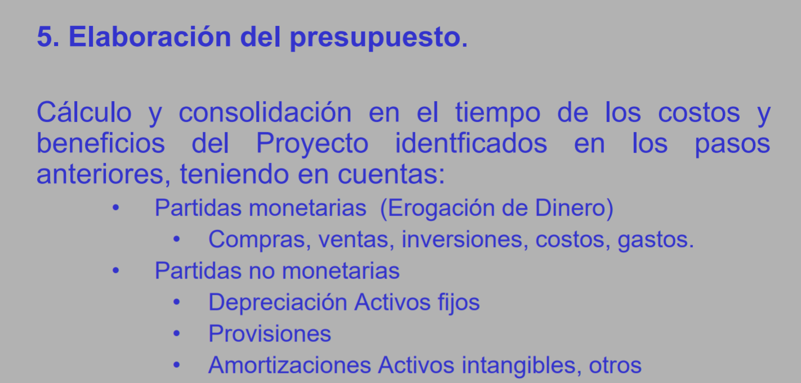

Que es un balance?
Estado financiero que representa los bienes, derechos u obligaciones y el patrimonio de la empresa
Estan compuestos por las cuentas del activo, pasivo , y patrimonio
Activo
Bienes que son potencial fuente de beneficios presentes o futuros (los recursos que tengo)
Pasivo
Obligaciones financieras con terceros (lo que debo)
Patrimonio
Activo - Pasivo
Estado de perdidas y ganancias. Permite ver como le fue a la empresa
Definir la duración de las etapas del proyecto teniendo en cuenta:
punto en el tiempo donde se realizan cortes financieros
Momento cero
Es lo sucedido antes de la operación del proyecto
Los otros momentos corresponden a lo sucedido durante la operación
Lapso entre momentos
Cifras (Inflación, IPC, devaluación etc)
Traducir mejor xd
